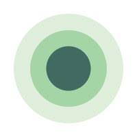

 Early Access Now Open
Structured Thinking,
Not Just Note-Taking.
A private space to store notes, links, and learning summaries — designed to help you think clearly, connect ideas, and turn learning into long-term knowledge.
Notes don't fail, Structure does.
You're not bad at learning. Your tools just weren't built for how knowledge actually works.

Scattered Notes
Your ideas live in 10 different apps, none of them connected.

Bookmark Overload
Hundreds of saved links you'll never revisit or remember.

No Idea Connections
Insights stay isolated, never building into bigger understanding.

Forgetting What
You Learned
Knowledge fades because there's no system to retain it.

THE SOLUTION
Your Second Brain,
Structured By Design.
Personal Knowledge Vault isn't another note-taking app. z It's a thinking environment where every note, link, and summary becomes part of an interconnected web of understanding
-
 Capture ideas with structure built-in from day one
Capture ideas with structure built-in from day one - Connect related concepts automatically as you write
- Build lasting knowledge through reflection prompts
- Find anything instantly with semantic search